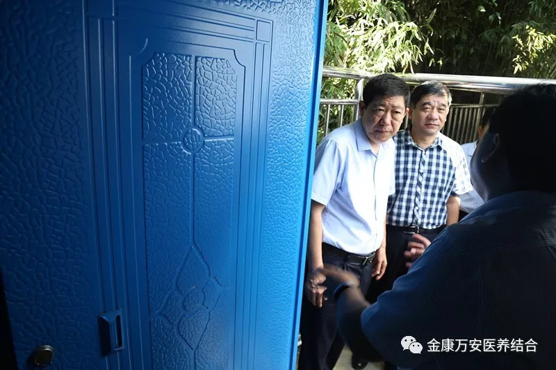
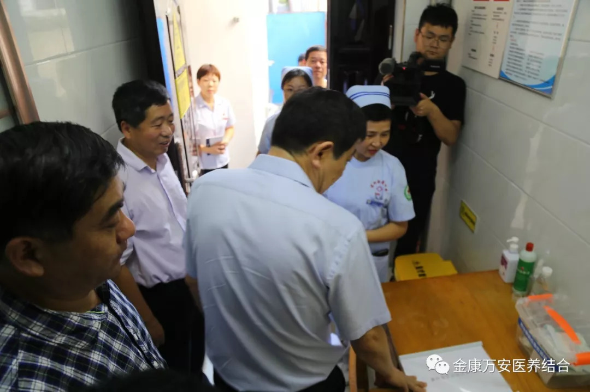
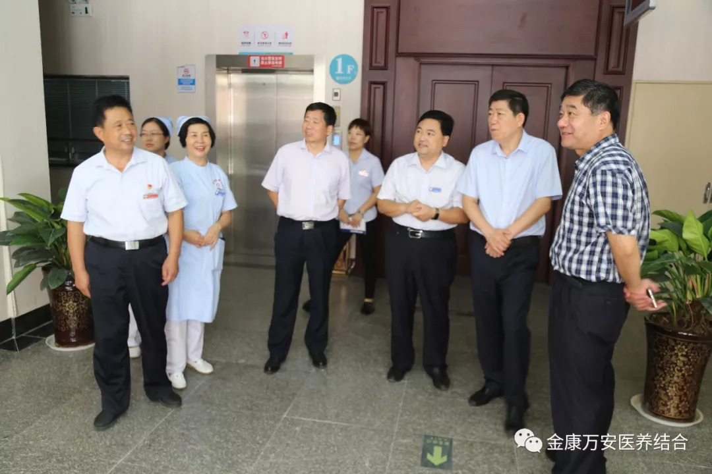

漯河市政府副市长栗社臣一行领导来我院视察指导“两污一废”工作
人气: "" 时间：2018-08-28
8月28日上午，漯河市政府副市长栗社臣一行领导来我院视察指导“两污一废”工作，就医疗废物规范化处理及污水、污泥无害化处置情况进行了调研。院长王卫峰等工作人员陪同视察。
院长王卫峰首先就我院医疗废弃物和污水、污泥处理的基本管理运行情况进行了汇报；随后，视察组一行深入现场，实地查看了我院医疗废物管理及污水、污泥处理情况，查看过程中市领导对我院医废管理工作给予了充分肯定，并提出了指导意见。


在汇报中王院长表示：我院会高度重视“两污一废”治理工作。把医疗废物处置和医院污水、污泥安全处理工作作为一项重大政治任务来完成，高度重视，明确责任，积极排查整改，全面完成污水、污泥处置设施建设和投入使用，确保卫生系统环保攻坚任务圆满完成，为老人、患者提供一个健康、舒适的环境。
